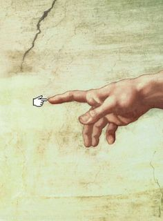

- Изначально я хотела поступить в педагогический, но не смогла получить целевое. После поступило предложение поступить в академию МВД, я смогла за 2 недели собрать все документы, но меня все равно не пропустили из-за малокровия.
- Тогда я стала искать куда бы можно было бы поступить с моими плохими показателями на экзаменах. Ну и в самый последний момент нашла МГОК, как только пришла в корпус колледжа я поняла что вот куда мне надо :)
- Ну, а потом пришел Хекслет :3
